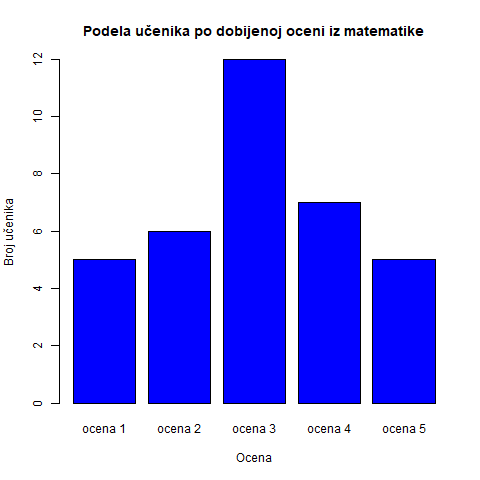
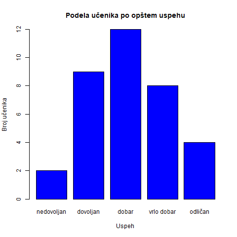
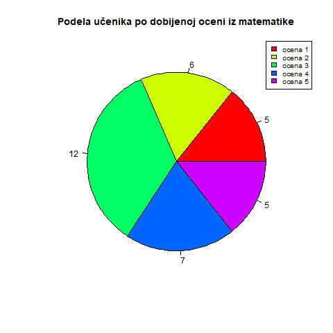
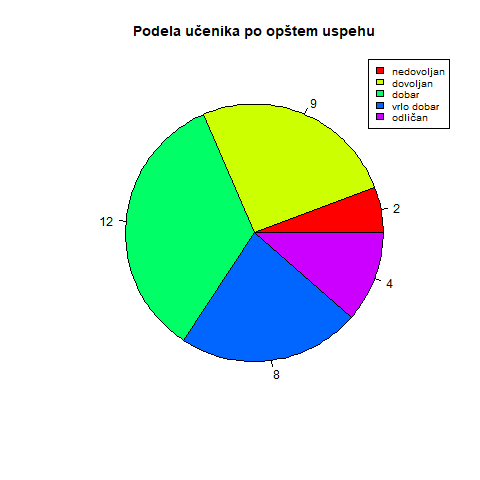

Predstavljanje statističkih podataka se može vršiti na različite načine.
Primer :
U jednom odeljenju ima 35 učenika.
Na kontrolnom iz matematike 5 učenika je dobilo ocenu 1, 6 učenika
je uradilo kontrolni za ocenu 2, dok je njih 12 dobilo ocenu 3.
Za ocenu 4 je uradilo njih 7,a 5 je dobilo njih 5.
Takođe, znamo podelu učenika i po opštem uspehu u školi. Dvoje učenika
je nedovoljno,devetoro njih ima dovoljan uspeh. Takođe, dvanaestoro učenika
ima dobar uspeh,dok osmoro ima vrlo dobar uspeh. Odličnih je četvoro.
| OCENA |
BROJ UČENIKA |
| ocena 1 |
5 |
| ocena 2 |
6 |
| ocena 3 |
12 |
| ocena 4 |
7 |
| ocena 5 |
5 |
| USPEH |
BROJ UČENIKA |
| nedovoljan |
2 |
| dovoljan |
9 |
| dobar |
12 |
| vrlo dobar |
8 |
| odličan |
4 |
U prvoj tabeli vidimo podelu učenika po ocenama na kontrolnom iz
matematike, a u drugoj podelu učenika po opštem uspehu.
Ovo je tabelarni prikaz statističkih podatka .


Ovde su statistički podaci prikazani pomoću trakastih dijagrama .


Ovde su statistički podaci prikazani pomoću kružnih dijagrama